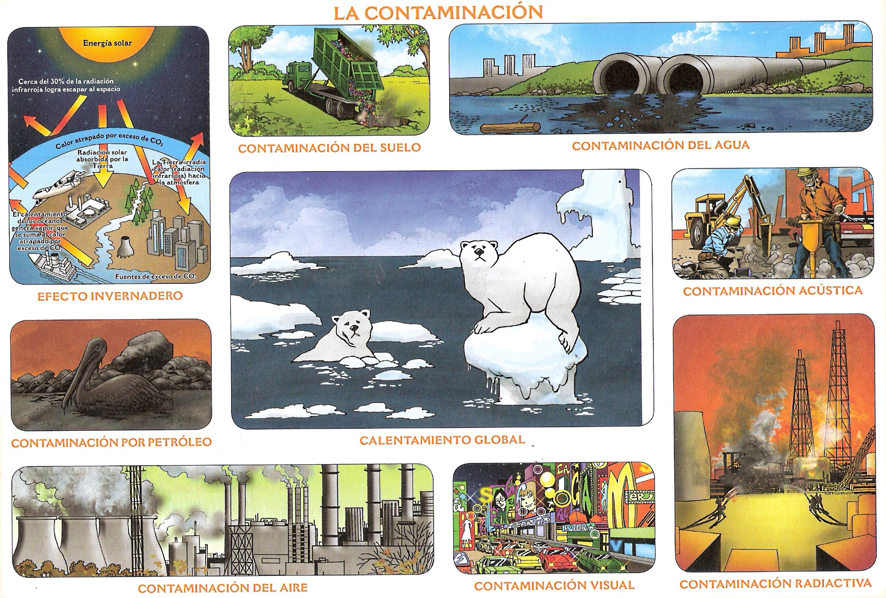
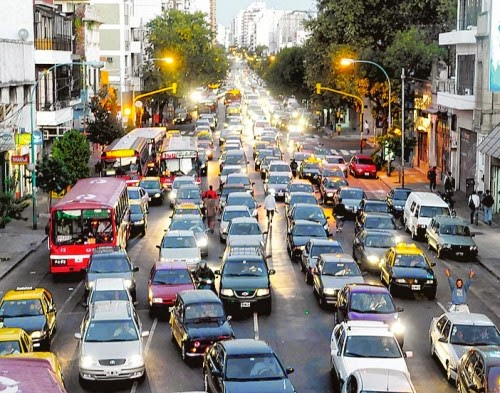
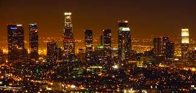
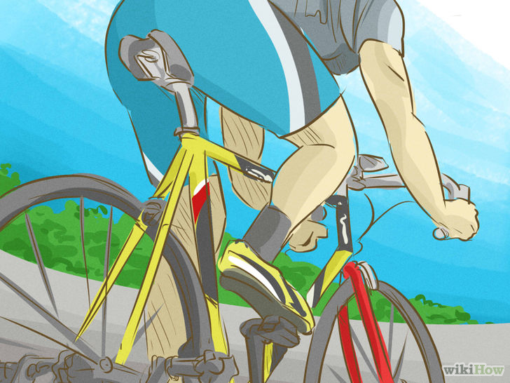
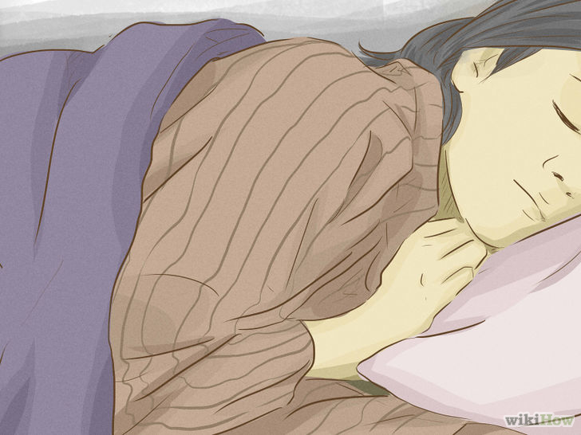
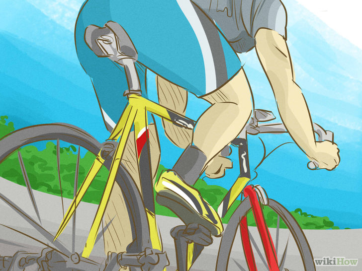
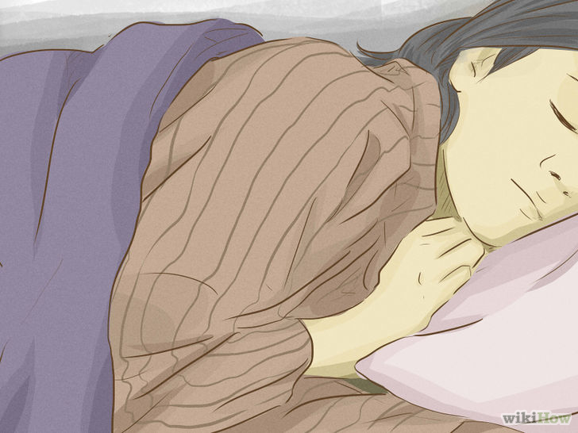

Diferentes tipos de contaminación están clasificados por su parte que afectan o resultan por las causas de contaminación particulares. Cada uno de estos tipos tiene sus propias causas y consecuencias distintivas. El estudio de la contaminación ayuda a entender los conceptos básicos con mayor detalle y producir protocolos para los tipos específicos. En consecuencia, los principales tipos de contaminación son:
Contaminación del Agua
Contaminación del Aire
Contaminación del Suelo
Contaminación Sérmica
Contaminación Radiactiva
Contaminación Acústica
Contaminación Lumínica

*Contaminación del Agua causada por:
- Los residuos industriales se vierten en estos cuerpos de agua. Esto provoca un desequilibrio químico en el agua que conduce a la muerte de los seres acuáticos.
- Insecticidas, pesticidas y productos químicos de maduración que se utilizan en las plantas que se usan en el sistema de aguas subterráneas o arroyos cercanos.
- Lavar la ropa cerca de lagos y ríos detergentes causa una enfermedad llamada “eutrofización”, que bloquea la luz del sol entre en el interior y reduce los valores de oxígeno en el agua, causando un ambiente inhabitable.
- ‘Derrames de petróleo’ son causados cuando los buques petroleros gigantes y plataformas petrolíferas que están presentes en los océanos están dañadas por cualquiera tipo de error humano o natural causando un daño a largo tiempo para el océano. Como el petróleo es más ligero que el agua, flota sobre el agua formando una capa de bloqueo del luz del sol.

*Contaminación Acústica causada por:
La contaminación acústica se produce cuando hay excesiva cantidad de ruido o sonido desagradable que causa la interrupción temporal en el equilibrio natural.
Esta definición es generalmente aplicable a los sonidos o ruidos que no son naturales, ya sea en su volumen o de su producción. Incluso los aparatos eléctricos en el hogar tienen un constante zumbido o pitido. En general, la falta de planificación urbana aumenta la exposición a sonidos no deseados. Es por esto que es necesario frenar a tiempo la contaminación acústica.

*Contaminación Lumínica causada por:
Es el uso excesivo y prolongado de luces artificiales, de una manera que obstaculiza el brillo del cielo nocturno, lo que altera los ciclos naturales y las actividades de la vida silvestre, problemas de salud en los seres humanos, y el impedimento de observar las estrellas y otros planetas.
Publicidad electrónica y Centros Comerciales
Eventos deportivos nocturnos
Luces de los autos
Parques de la ciudad, aeropuertos, lugares públicos


 


